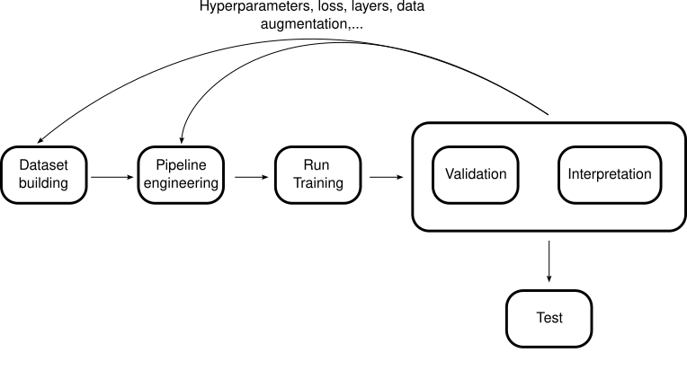
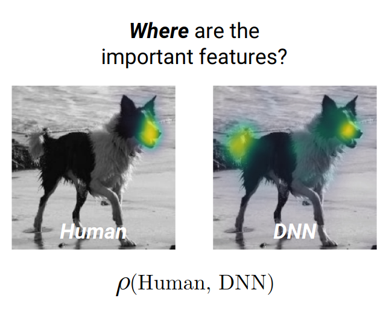

Keeping humans in the loop via citizen science
2024-07-05
Quick word about myself
- Master in Biostatistics (Univ. Montpellier)
- Thesis on label ambiguity in crowdsourcing setting
- Currently doing a postdoc on Reinforcement learning for citizen data collection
- Today’s goal: explore the world of human-in-the-loop
ChatGPT training
How was ChatGPT (3.5) trained?
- very large dataset: (570Gb of text data, 499 B of tokens)
{
var data = [{
values: [3, 8, 7, 22, 60],
labels: ["wikipedia", "Books1", "Books2", "Webtext2", "Common Crawl"],
textinfo: "label+percent",
type: "pie",
marker: {
colors: ["lightcyan", "cyan", "royalblue", "darkblue", "gold"]
}
}];
var layout = {
template: 'plotly_light',
paper_bgcolor: "rgba(0,0,0,0)",
plot_bgcolor: "rgba(0,0,0,0)",
font: {
size: 26,
color: "white"
},
margin: {"t": 0, "b": 0, "l": 0, "r": 0},
showlegend: false
};
const div = document.createElement('div');
Plotly.newPlot(div, data, layout,{displayModeBar: false});
return div;
}Repartition of the training dataset
Underrepresentation on the web means less accuracy and more hallucinations!
- Other data (chosen quality)
- Weighted sampling: Wikipedia=5CommonCrawl, Books1=20ComonCrawl,…
Training with humans
- pretraining (unsupervised learning): fill blanck, attention mechanisms, next word
- fine-tuning (supervised learning): specific dialogues, hyperparameters tuning
- RLHF (reinforcement learning): workers give feedback
Your feedback is informative
Give me a paper of tibshirani about crowdsourced datasetsBut tibshirani has never worked on crowdsourced datasetsHuman-in-the-loop
Pipeline

Data annotation
Where? (not exhaustive)
- Paid workers: Amazon mechanical turk, Google crowd
- Gamified users: Duolingo, Eyewire
- Implicit crowdsourcing: Captcha, Spotify, SNCF
- Voluntary unpaid AND not gamified work for communities: Tournesol, Pl@ntNet
- Ethically “challenging” projects/teams “sometimes”: Sama, BluServo (Texas), Toloka via NTechLab and Tevian,…
Learn from the collected annotation
Label aggregation
(Weighted) Majority vote
K classes, worker \(j\) with weight \(w_j>0\) answers label \(y_i^j\)
\[ \hat{y}_i^{WMV} = \underset{k\in[K]}{\arg\max}\sum_{j} w_j \mathbf{1}(y_i^j=k) \]
- Pros: Easy for theory (depending on the weight used), understandable
- Cons: Sensitive to poorly performing workers or class dependent skills
Dawid and Skene
- Model each worker as a confusion matrix (size \(K\times K\)) noted \(\pi^j\)
- \(\pi_{k,\ell}^j=\mathbb{P}(\text{worker }j \text{ to answer }\ell \text{ while true label is } k)\)
- \(y_i^j|y_i^\star=k \sim \mathcal{M}(\pi^j_{k,\bullet})\)
- Maximum likelihood estimation of \(\pi^j\) and \(y_i^\star\) (EM algorithm)
Dawid and Skene example
Toy-data results
- BlueBirds dataset (binary classification): 39 workers, 108 tasks
- Metrics: label recovery accuracy \[ \frac{1}{n}\sum_{i=1}^n \mathbf{1}(\hat{y}_i=y_i^\star) \]
| Method | MV | NS | DS | GLAD |
|---|---|---|---|---|
| Label Recovery Accuracy | 0.75 | 0.75 | 0.89 | 0.72 |
Issues with DS
- What is the main issue with DS model in practice?
- \(K\times K\) parameters to estimate for each worker: does not scale with large number of classes
- Alternative: Clustered DS (2018) highly unstable
- Many variants (for small-medium size dataset)
Annotate yes, but what?
Full dataset annotation
- Costly
- Lots of data to aggregate
- Needs lots of users/workers
- Modern ML architectures can often learn without labels first
- The rule of 5 needs to disappear!! (please)
- Can we focus on difficult images?
What is a difficult image in a dataset?
- Can an image be intrinsically difficult?
- How would you quantify an image’s difficulty from crowdsourced votes?
Angelova (2004):“Difficult examples are those which obstruct the learning process or mislead the learning algorithm or those which are impossible to reconcile with the rest of the examples”
Annotation to find issues in AI predictions

- ClickMe gamified platform (by Thomas Serre)
- Goal: harmonize AI decisions and human reflexions (Fet et al. 2022)
Improve performance and alignment
- How: loss function penalizes feature importance maps
Sentiment analysis
- Humans have preferenes: applications to economics, marketing, recommender systems on streaming platforms
- Preferences \(\neq\) wellbeing \(\neq\) choices (current limitation in recommender systems like Netflix)
- Video Cognitive Empathy (60K videos, 27 emotions, 15 videos per human)
Examples
top-3:
- Amusement (0.21)
- Empathic Pain (0.14)
- Surprise (0.13)
Also: boredom (0.12) and confusion (0.05)
Examples
top-3:
- Awe/wonder (0.22)
- Surprise Pain (0.21)
- Admiration (0.14)
Also: confusion (0.12) and anxiety (0.03)
Examples
top-3:
- Fear (0.4)
- Horror (0.37)
- Interest (0.11)
Also: Surprise (0.1) and boredom (0.04)
Map of sentiments
Use in practice of sentiment analysis
User-user recommendation system including sentiment analysis on customer reviews (ratings + text)
recommend items based on user-user similarity (adjusted cosine)
\[ \mathrm{Adjcos}(u_i, u_j) = \frac{(u_i-\mu_i)^\top (u_j-\mu_j)}{\|u_i-\mu_i\|\|u_j-\mu_j\|} \]
Use in practice of sentiment analysis
- Compute expected ratings for each user-item pair

Use in practice of sentiment analysis
- Get prediction of items of interest
- Recommend item with highest score

Use in practice of sentiment analysis
- Take into account reviews: “It’s a pen”, “Just a pen” vs “Excellent CD but arrived broken”
- Use a model to predict a “positive score” given multiple reviews (Logistic regression binary classification)
- Take it into account in final recommendation: \[ \mathrm{rec\ item}= \mathrm{argmax}\{\alpha (\text{predicted rating}) + \beta\text{(sentiment scoring)}\} \]
Large scale Crowdsourcing for botanical identification
- Take a picture > Get most likely species
- Annotate other’s pictures
Pl@ntNet aggregation
Example (initial setting)
Example (switch)
Example (invalidate)
Dataset
- South Western Flora observations since 2017
- +820 000 users, more than 11 000 species
- +6.5M of observations
- +9M votes
Imbalance 80% of observations are represented by 10% of total votes
Performance
Conclusion
- Crowdsourcing helps models perform better
- Keeping human in the loop can help detect issues in data
- Warning: only doing it once at the beginning will not keep the model in check when deployed!! Listen to the feedback and ask for it
\[Thank\ you\]